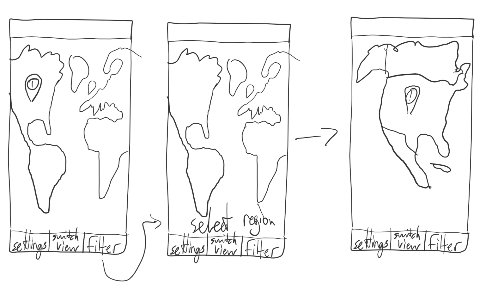
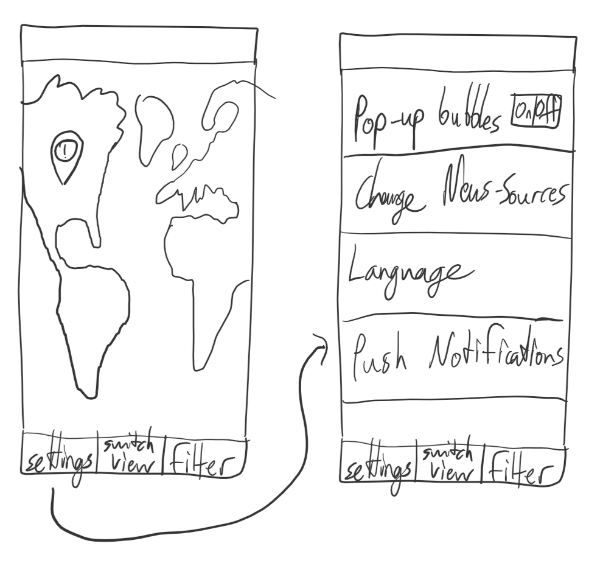
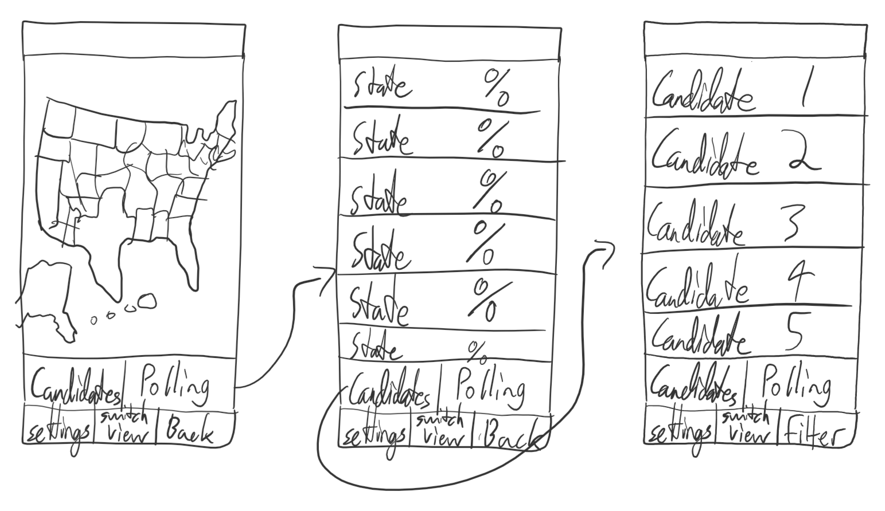

Users can switch the view of the map to a list of countries to better filter them.
Users can filter what region they want to focus on.
Users can change certain settings of the app
Users can find out more details on an election, such as candidates and polling data.